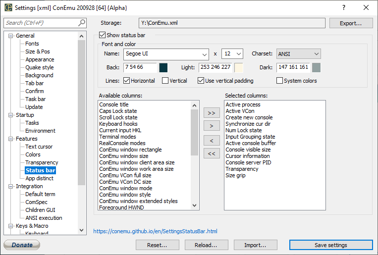

<!-- Content starts -->

<!--
<i>This page was generated automatically from ConEmu sources</i>
-->
<p><!-- IDD_SPG_STATUSBAR --> </p>

<h1 id="h0"><a name="Settings:_Status_bar"></a>Settings: Status bar<a href="#Settings:_Status_bar" class="section_anchor"></a></h1>
<p> </p>

<h2><a name="Show_status_bar"></a>Show status bar<a href="#Show_status_bar" class="section_anchor"></a></h2>

<h2><a name="Font_and_color"></a>Font and color<a href="#Font_and_color" class="section_anchor"></a></h2>
<p>RTEXT </p>
<p>RTEXT </p>
<p>RTEXT </p>
<p>RTEXT </p>
<p><strong>Dark</strong>  </p>
<p><strong>Horizontal</strong> <i>(Lines)</i>  </p>
<p><strong>Vertical</strong>  </p>
<p><strong>Use vertical padding</strong>  </p>
<p><strong>System colors</strong>  </p>
<p>LTEXT </p>
<p>LTEXT </p>
<p><strong><tt>&gt;</tt><tt>&gt;</tt></strong>  </p>
<p><strong><tt>&gt;</tt></strong>  </p>
<p><strong><tt>&lt;</tt></strong>  </p>
<p><strong><tt>&lt;</tt><tt>&lt;</tt></strong>  </p>

<h2><a name="Font_and_color"></a>Font and color<a href="#Font_and_color" class="section_anchor"></a></h2>

<!-- Content ends -->
